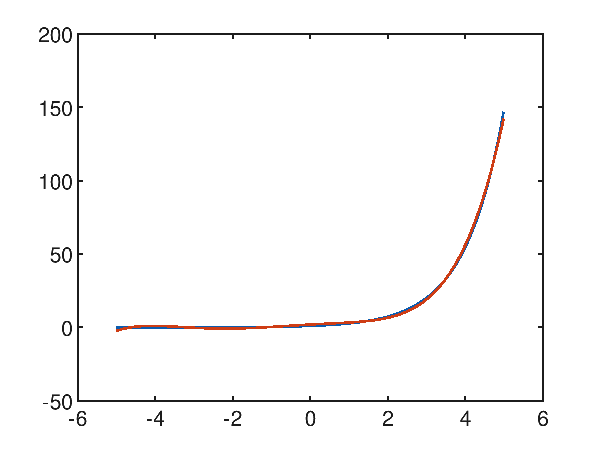
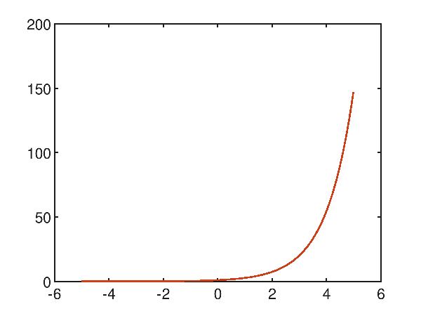
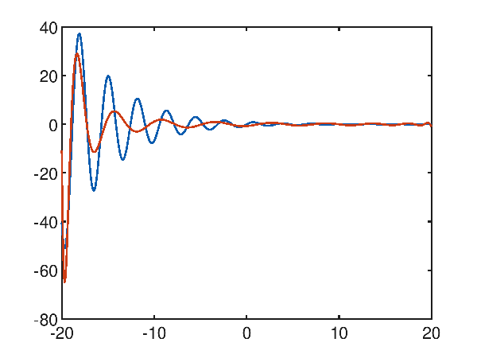

Regressione polinomiale con Accord.NET
Questo post mostra un uso della classe PolynomialRegression del framework Accord.NET
con l'obiettivo di dimostrare che la regressione polinomiale classica del machine learning può raggiungere interessanti livelli di accuratezza con tempi di learning estremamente brevi.
Anche se le reti neurali di tipo MLP (Multi Layer Perceptron) possono essere considerate degli approssimatori universali di funzioni (si veda Approssimazione con percettroni multistrato altamente configurabili su questo sito web),
per alcune tipologie di dataset, un classico algoritmo supervisionato di regressione di machine learning, come quello di regressione polinomiale di cui si tratta qui, può arrivare a livelli di accuratezza accettabili
e con un costo computazionale decisamente più basso rispetto a quello di un MLP.
Nel mondo reale i dataset preesistono alla fase di apprendimento, infatti questi vengono ottenuti estraendo dati da database di produzione o file Excel, dall'output di strumenti di misura, dai data-logger collegati a sensori elettronici e così via,
e quindi adoperati per le fasi di learning successive;
ma poiché qui il focus è l'approssimazione polinomiale in sé e non l'approssimazione di un fenomeno reale, i dataset utilizzati in questo post saranno generati sinteticamente:
questo ha il vantaggio di poter stressare l'algoritmo e vedere per quali tipologie di dataset l'algoritmo ha accuratezza accettabile e per quali invece l'algoritmo fatica.
Implementazione
Il codice descritto da questo post è scritto il C#, richiede Microsoft .NET Core 3.1 e il framework Accord.NET 3.8.0.
Per ottenere il codice si veda il paragrafo Download del codice completo in fondo a questo post.
La classe più importante del progetto è la classe PolynomialLeastSquares1to1Regressor che è un wrapper della classe
PolynomialRegression di Accord.NET.
using System.Globalization;
using System.Collections.Generic;
using System.Linq;
using Accord.Statistics.Models.Regression.Linear;
using Accord.Math.Optimization.Losses;
using Regressors.Entities;
using Regressors.Exceptions;
namespace Regressors.Wrappers
{
public class PolynomialLeastSquares1to1Regressor
{
private int _degree;
private bool _isRobust;
private PolynomialRegression _polynomialRegression;
public PolynomialLeastSquares1to1Regressor(int degree, bool isRobust = false)
{
_degree = degree;
_isRobust = isRobust;
}
public double[] Weights
{
get
{
AssertAlreadyLearned();
return _polynomialRegression.Weights;
}
}
public double Intercept
{
get
{
AssertAlreadyLearned();
return _polynomialRegression.Intercept;
}
}
private void AssertAlreadyLearned()
{
if (_polynomialRegression == null)
throw new NotTrainedException();
}
public string StringfyLearnedPolynomial(string format = "e")
{
if (_polynomialRegression == null)
return string.Empty;
return _polynomialRegression.ToString(format, CultureInfo.InvariantCulture);
}
public void Learn(IList<XtoY> dsLearn)
{
double [] inputs = dsLearn.Select(i => i.X).ToArray();
double [] outputs = dsLearn.Select(i => i.Y).ToArray();
var pls = new PolynomialLeastSquares() { Degree = _degree, IsRobust = _isRobust };
_polynomialRegression = pls.Learn(inputs, outputs);
}
public IEnumerable<XtoY> Predict(IEnumerable<double> xvalues)
{
AssertAlreadyLearned();
double []xvaluesArray = xvalues.ToArray();
double [] yvaluesArray = _polynomialRegression.Transform(xvaluesArray);
for(int i = 0; i < xvaluesArray.Length; ++i)
{
yield return new XtoY() {X = xvaluesArray[i], Y = yvaluesArray[i]};
}
}
public static double ComputeError(IEnumerable<XtoY> ds, IEnumerable<XtoY> predicted)
{
double [] outputs = ds.Select(i => i.Y).ToArray();
double [] preds = predicted.Select(i => i.Y).ToArray();
double error = new SquareLoss(outputs).Loss(preds);
return error;
}
}
}
Esecuzione del codice
Su un sistema Linux, Mac o Windows ove .NET Core 3.1 e git client siano già installati, per scaricare il sorgente e mandare in esecuzione il programma, eseguire i seguenti comandi:
git clone https://github.com/ettoremessina/accord-net-experiments
cd accord-net-experiments/Prototypes/CSharp/Regressors
dotnet build
dotnet rundotnet runout vengono create nove cartelle, ciascuna corrispondente a un caso di test built-in (si veda la classe PolynomialLeastSquares1to1RegressorTester);
ciascuna cartella contiene quattro file:
learnds.csv che è il dataset di learning in formato csv con header.testds.csv che è il dataset di test in formato csv con header.prediction.csv che è il file della predizione in formato csv con header.plotgraph.m per Octave.Il file
prediction.csv è ottenuto applicando le $x$ del dataset di test al regressore che ha imparato la curva;
si osservi che il passo di discretizzazione dei dataset di test non è un multiplo di quello di learning
per garantire che il dataset di test contenga la maggior parte dei dati non presenti nel dataset di learning, e questo rende più interessante la predizione.Lo script
plotgraph.m, se eseguito su Octave, produce un grafico con due curve: quella blu è il dataset di test, quella rossa è la predizione;
i grafici mostrati qui di seguito sono stati generati eseguendo tali script. In alternativa si possono importare i file csv in Excel o altri software di foglio elettronico
e generare i grafici tramite essi; infine è sempre possibile utilizzare servizi online di plotting di grafici a partire da file csv.L'output del programma produce un blocco di output per ciascuno dei nove casi di test build-in; in particolare ogni blocco mostra il polinomio che approssima e l'errore quadratico medio calcolato sul dataset di test. Qui in esempio del primo blocco di output:
Started test #PLSR_01
Generating learning dataset
Generating test dataset
Training
Learned polynomial y(x) = 5.000000e-001x^3 + -2.000000e+000x^2 + -3.000000e+000x^1 + -1.000000e+000
Predicting
Error: 9.42921358148529E-24
Saving
Terminated test #PLSR_01
Caso di studio dell'approssimazione polinomiale di una sinusoide
Dato il dataset sintetico generato con una sinusoide $f(x)=\sin x$ nell'intervallo $[-2 \pi, 2 \pi]$, il primo tentativo di approssimazione è effettuato tentando con un polinomio di terzo grado; da questo grafico:

p(x) = -6.938440e-003x^3 + -1.123961e-004x^2 + 8.852045e-002x^1 + 8.879541e-004
si evince palesemente che il risultato desiderato è assai lontato da quello desiderato e ha un errore quadratico medio di 0.35855442002271176.
Ragionando empiricamente (attenzione: questo ragionamento non è appricabile in generale), osservando che la funzione da approssimare ha 2 minimi e 2 massimi relativi nell'intervallo considerato
ovverosia 5 tratti a direzione di crescita opposta, si osserva che serve almeno un polinomio di grado 5 per realizzare questi 5 tratti a direzione di crescita opposta.
In effetti, tentando ad approssimare con un polinomio di quinto grado le cose iniziano ad andare meglio:

p(x) = 1.481271e-003x^5 + 8.653159e-006x^4 + -7.195156e-002x^3 + -2.278718e-004x^2 + 6.388252e-001x^1 + 6.429388e-004
e infatti l'errore quadratico medio è di 0.047802033570042826.
Alzando il grado del polinomio a 10, si nota che ci si avvicina in maniera interessante a una approssimazione molto accurata:

p(x) = 3.600998e-010x^10 + 1.030748e-006x^9 + -3.048007e-008x^8 + -1.432993e-004x^7 + 8.871355e-007x^6 + 7.507463e-003x^5 + -1.030648e-005x^4 + -1.614928e-001x^3 + 4.071080e-005x^2 + 9.908745e-001x^1 + -2.473974e-005
e infatti l'errore quadratico medio scende al valore molto basso di 1.730499971068361E-05.
Caso di studio dell'approssimazione polinomiale di una funzione con una cuspide
Sia dato il dataset sintetico generato con la seguente funzione $f(x)=\sqrt{|x|}$ nell'intervallo $[-5, 5]$, che presenta una cuspide nell'origine; la regressione polinomiale ha difficoltà ad approssimare la cuspide come si evince dal seguente grafico che mostra un polinomio di decimo grado che tenta di approssimare la funzione obiettivo:

p(x) = 3.937716e-006x^10 + -2.624859e-018x^9 + -2.677173e-004x^8 + 1.265696e-016x^7 + 6.737778e-003x^6 + -1.993373e-015x^5 + -7.799737e-002x^4 + 1.137932e-014x^3 + 4.557707e-001x^2 + -1.714000e-014x^1 + 5.263100e-001
e palesemente si osserva che intorno alla cuspide l'approssimazione non riesce; sull'intero intervallo l'errore quadratico medio è comunque interessante e vale 0.004819185301219476.
Anche provando con un polinomio di grado 20:

p(x) = -1.484256e-010x^20 + 2.182564e-019x^19 + 1.919608e-008x^18 + -2.385482e-017x^17 + -1.064756e-006x^16 + 1.092940e-015x^15 + 3.310069e-005x^14 + -2.724916e-014x^13 + -6.325746e-004x^12 + 4.014962e-013x^11 + 7.671207e-003x^10 + -3.552878e-012x^9 + -5.887499e-002x^8 + 1.833481e-011x^7 + 2.773153e-001x^6 + -5.082524e-011x^5 + -7.577731e-001x^4 + 6.342430e-011x^3 + 1.180241e+000x^2 + -2.295607e-011x^1 + 3.844349e-00
si migliora l'approssimazione intorno alla cuspide ma non si riesce a risolverla; sull'intero intervallo l'errore quadratico medio è comunque notevolmente basso e vale 0.0014078917181083847.
Caso di studio dell'approssimazione di un tratto di esponenziale
Anche se la funzione esponenziale non è approssimabile con un polinomio, contrariamente a quanto si possa pensare, su un tratto limitato l'approssimazione raggiunge un grande livello di accuratezza. Data la funzione esponenziale $f(x)=e^x$ nell'intervallo $[-5, 5]$, la regressione polinomiale con un polinomio di quinto grado è già accettabile, con un errore quadratico medio pari a 0.9961909800481012, come mostra il grafico:

p(x) = 2.069063e-002x^5 + 1.196676e-001x^4 + 7.493153e-003x^3 + -2.482972e-001x^2 + 1.470547e+000x^1 + 1.955036e+000
Utilizzando un polinomio di decimo grado, l'approssimazione diventa molto accurata, con un errore quadratico medio pari a 1.6342296507040001E-06:

p(x) = 4.697166e-007x^10 + 4.930956e-006x^9 + 1.916581e-005x^8 + 1.422306e-004x^7 + 1.460971e-003x^6 + 8.937498e-003x^5 + 4.125903e-002x^4 + 1.640806e-001x^3 + 5.008296e-001x^2 + 1.003040e+000x^1 + 9.997306e-001
Un caso di studio difficile: la sinusoide smorzata
La funzione $f(x)=\frac{\sin 2x}{e^\frac{x}{5}}$, che è una sorta di sinusoide smorzata, nell'intervallo $[-20, 20]$ non sembra facile da approssimare per via dei tanti minimi e massimi locali presenti; per quanto detto sopra si tenta subito ad approssimare con un polinomio di alto grado, ad esempio un ventesimo grado; dal seguente grafico:

p(x) = 2.438374e-021x^20 + -1.303248e-019x^19 + -2.737692e-018x^18 + 2.182637e-016x^17 + 6.129847e-016x^16 + -1.513625e-013x^15 + 4.547323e-013x^14 + 5.628751e-011x^13 + -3.185157e-010x^12 + -1.215171e-008x^11 + 8.477405e-008x^10 + 1.541180e-006x^9 + -1.160371e-005x^8 + -1.108299e-004x^7 + 8.318767e-004x^6 + 4.124021e-003x^5 + -2.845069e-002x^4 + -6.550661e-002x^3 + 3.595534e-001x^2 + 2.775935e-001x^1 + -7.192461e-001
si noti che il grado 20 non è sufficiente, e l'errore quadratico medio è alto e uguale a 29.906606603488548.
Utilizzando un polinomio di quarantesimo grado, l'approssimazione diventa molto accurata, con un errore quadratico medio decisamente più basso pari a 0.03318409290980062:

p(x) = 2.620011e-041x^40 + -2.261159e-040x^39 + -1.064515e-037x^38 + 9.291263e-037x^37 + 2.000472e-034x^36 + -1.767156e-033x^35 + -2.306009e-031x^34 + 2.063269e-030x^33 + 1.823227e-028x^32 + -1.653595e-027x^31 + -1.047264e-025x^30 + 9.635843e-025x^29 + 4.515541e-023x^28 + -4.218466e-022x^27 + -1.489064e-020x^26 + 1.413717e-019x^25 + 3.790980e-018x^24 + -3.661427e-017x^23 + -7.468664e-016x^22 + 7.347405e-015x^21 + 1.134298e-013x^20 + -1.138497e-012x^19 + -1.314822e-011x^18 + 1.349687e-010x^17 + 1.143662e-009x^16 + -1.205220e-008x^15 + -7.274557e-008x^14 + 7.920025e-007x^13 + 3.256202e-006x^12 + -3.704228e-005x^11 + -9.671991e-005x^10 + 1.175149e-003x^9 + 1.729315e-003x^8 + -2.354541e-002x^7 + -1.527679e-002x^6 + 2.660934e-001x^5 + 3.057082e-002x^4 + -1.386296e+000x^3 + 1.984571e-001x^2 + 2.097913e+000x^1 + -2.557841e-001
Alternative
Per esempi di regressione di una funzione reale di una variable con SVM in Weka si veda Regressione con SMO per SVM con kernel PUK in Weka.
Per approfondire invece l'approssimazione di una funzione reale di una variable con un MLP si veda Approssimazione di una funzione reale di una variabile con TensorFlow e Approssimazione di una funzione reale di una variabile con PyTorch.
Download del codice completo
Il codice completo è disponibile su GitHub.
Questo materiale è distribuito su licenza MIT; sentiti libero di usare, condividere, "forkare" e adattare tale materiale come credi.
Sentiti anche libero di pubblicare pull-request e bug-report su questo repository di GitHub oppure di contattarmi sui miei canali social disponibili nell'angolo in alto a destra di questa pagina.